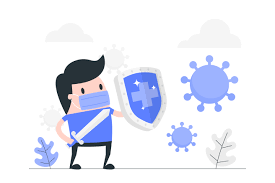
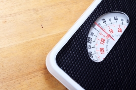
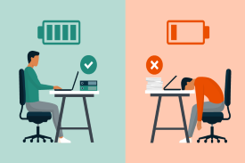

What are the benefits of a good night's sleep?
Boost Immune System
When your body gets enough sleep, your immune cells and proteins will have the rest they need to fight off disease and illnesses. Constant lack of sleep causes your immune cells to work slower and different. They may not ward off illnesses as quickly, and you could get sick more often. According to sleep specialists, proper sleep can also increase the effectiveness of vaccines.

Prevent Weight Gain
Enough sleep can help your body to reduce weight gain. Less sleep will increase production of ghrelin, a hormone that boosts appetite, and reduce production of leptin, a hormone that informs you when you're full. Hence, lack of sleep can cause you to eat more and have more food cravings. With enough sleep, you'll have the energy to fight off food cravings and reduce your food intake to an adequate and appropriate amount.

Strengthen Heart
When sleeping, your blood pressure goes down, this gives your heart and blood vessels a bit of rest. The less sleep you get, the longer your blood pressure stays up a 24-hour cycle. High blood pressure can lead to heart disease, including stroke. In additon, lack of sleep can cause your body to release cortisol, a stress hormone that triggers your heart to work harder. Hence, you can strengthen your heart by giving it a rest.
Improve Mood
Waking up to a good rest increases your energy level. With the energy level it's harder for you to feel upset at whatever is thrown at you.
Chronic lack of sleep can increase the chances of experiencing a mood disorder. Studies has shown that people with insomnia are five times more likely to develop depression.
Increase Productivity
Sleep has been proven to be linked to improved concentration and higher cognitive function, it sharpens your mind for you to do work successfully. A sleepless night can lead you to be frazzled, making you prone to making mistakes in your work.
Avoid caffeine in the afternnon as it may set you up for another sleepless night which could lead you to yet another unproductive day.

Increase Physical Performance
Studies has shown that basketball players who did not sleep well, were not very good basketball players. For better hand-eye coordination, reaction time and muscle recovery, sleep is required. It is required to rest yourself for you to have the energy and time for muscle repair and don't forget about motivation. All these play a part in performing well in exercises.
Improve memory
Sleep gives your body the rest it needs. However, your mind is still at work. During sleep, your mind is actually processing and consolidating your memories from the day. Without sleep you won't be able to store those memories or might even create false memories. And without enough sleep, it's hard for your brain to focus and absorb new information. Hence, if you want to improve on your memory, you should get completed well-rested sleeps